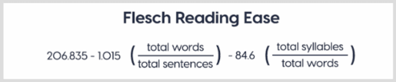

Text Length
from tqdm import tqdm
tqdm.pandas()
df['total_length'] = df['text'].progress_apply(len)
Words Length
# Count the number of words.
from tqdm import tqdm
tqdm.pandas()
df['num_words'] = df.text.str.count('\S+')
Digits Length
df[f'{col}_n_digits'] = df[col].apply(lambda text: len([char for char in list(text) if char.isdigit()]))
Punctuations Length
import string
df[f'{col}_n_punc'] = df[col].apply(lambda text: len([char for char in list(text) if char in string.punctuation]))
Capitals Length
# Count the number of capital characters.
from tqdm import tqdm
tqdm.pandas()
df['capitals'] = df['text'].progress_apply(lambda comment: sum(1 for c in comment if c.isupper()))
Unique Words Length
# Count the number of unique words.
from tqdm import tqdm
tqdm.pandas()
df['num_unique_words'] = df['text'].progress_apply(lambda comment: len(set(w for w in comment.split())))
Unique Digits Length
df[f'{col}_n_unique_digits'] = df[col].apply(lambda text: len([char for char in set(text) if char.isdigit()]))
Unique Punctuations Length
import string
df[f'{col}_n_unique_punc'] = df[col].apply(lambda text: len([char for char in set(text) if char in string.punctuation]))
Unique vs. Words
df['words_vs_unique'] = df['num_unique_words'] / df['num_words']
Caps vs. Length
# Count the number of unique words.
from tqdm import tqdm
tqdm.pandas()
df['caps_vs_length'] = df.progress_apply(lambda row: float(row['capitals'])/float(row['total_length']), axis=1)
Mean of Words lengths in a sentence
f_data['Mean_Word_Length'] = f_data.text.apply(lambda x:np.round(np.mean([len(w) for w in x.split(' ')]),2) )
Flesch reading-ease score (FRES) test
Readability is the ease with which a reader can understand a written text. In natural language processing, the readability of text depends on its content. It focuses on the words we choose, and how we put them into sentences and paragraphs for the readers
to comprehend. 9.1 The Flesch Reading Ease formula
In the Flesch reading-ease test, higher scores indicate material that is easier to read; lower numbers mark passages that are more difficult to read. The formula for the Flesch reading-ease score (FRES) test is

90-100 - Very Easy
80-89 - Easy
70-79 - Fairly Easy
60-69 - Standard
50-59 - Fairly Difficult
30-49 - Difficult
0-29 - Very Confusing
#utility functions:
def plot_readability(a,b,c,title,bins=0.4,colors=colors):
trace1 = ff.create_distplot([a,b,c],sent, bin_size=bins, colors=colors, show_rug=False)
trace1['layout'].update(title=title)
py.iplot(trace1, filename='Distplot')
table_data= [["Statistical Measures","neu",'pos','neg'],
["Mean",mean(a),mean(b),mean(c)],
["Standard Deviation",pstdev(a),pstdev(b),pstdev(c)],
["Variance",pvariance(a),pvariance(b),pvariance(c)],
["Median",median(a),median(b),median(c)],
["Maximum value",max(a),max(b),max(c)],
["Minimum value",min(a),min(b),min(c)]]
trace2 = ff.create_table(table_data)
py.iplot(trace2, filename='Table')
!pip install textstat
import textstat
from tqdm import tqdm
tqdm.pandas()
fre_neu = np.array(df["text"][df["sentiment"] == sent[0]].progress_apply(textstat.flesch_reading_ease))
fre_pos = np.array(df["text"][df["sentiment"] == sent[1]].progress_apply(textstat.flesch_reading_ease))
fre_neg = np.array(df["text"][df["sentiment"] == sent[2]].progress_apply(textstat.flesch_reading_ease))
plot_readability(fre_neu,fre_pos,fre_neg,"Flesch Reading Ease",20)
Jaccard Score
def jaccard(str1, str2):
a = set(str(str1).lower().split())
b = set(str(str2).lower().split())
c = a.intersection(b)
return float(len(c)) / (len(a) + len(b) - len(c))
Polarity
from textblob import TextBlob
def get_sent(text):
testimonial = TextBlob(str(text))
return testimonial.sentiment.polarity
- Gender Feature [detect if sentence is male, female, or none].
- Grammer Feature [detect if sentence is in past, present, or future].